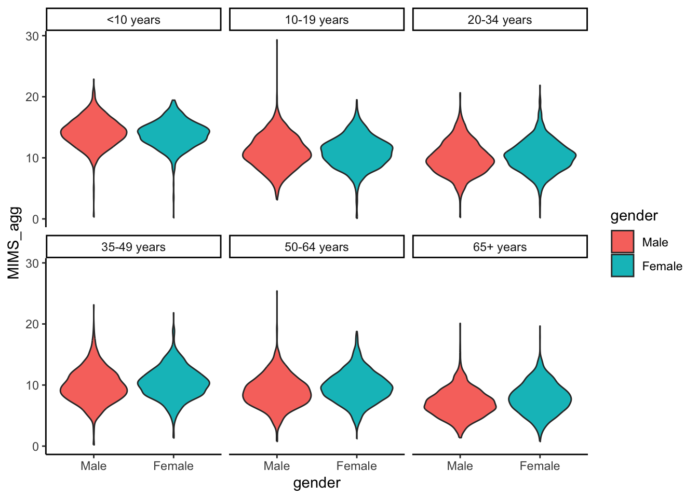
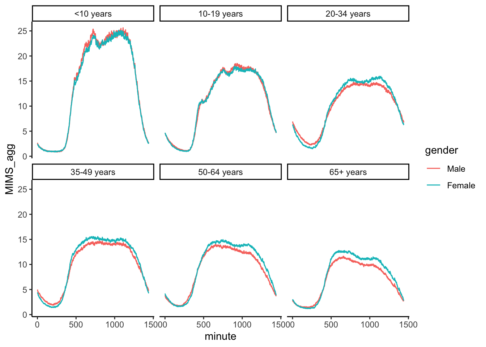

Here I analyse physical activity data from NHANES 2011-2012 and NHANES 2013-2014 cohorts, used in (Crainiceanu 2024). I used the single-level NHANES 2011-2012 and NHANES 2013-2014 dataset downloaded from (Crainiceanu 2023).
The purpose of this analysis is twofold. Physical activity is a stronger predictor of mortality than age, meaning that targeted interventions for increasing physical activity could reduce disease burden and mortality (Leroux et al. 2024). The first aim of this analysis is to describe how physical activity patterns vary across sex and age. This could of interest to public health practitioners interested in identifying population subgroups with low rates of physical activity, as these subgroups are those worth considering for targeted behavioural interventions.
Secondly, I explore several ways of visualising this large and complex dataset. This is challenging because of the large number of participants (12,610), each of which have 1440 measurements (one for each minute in the day). There is therefore large sample size and (structured) dimensionality, visualisation of which is challenging, yet essential in order to understand/see heterogeneity and variation across participants and time, which might be lost when considering just summary statistics of the data. This section might be of interest to scientists and data journalists interested in ways of representing large and complicated datasets.
# Initialise, read in data, and generate data dictionaryrm(list =ls())library(tidyverse)library(ggridges)library(grid)library(gridExtra)library(labelled)# Read datadata <-data.frame(readRDS("nhanes_fda_with_r.rds"))# Subset to variables of interestdata <- data %>%select("SEQN", "MIMS", "gender", "age")dictionary <-generate_dictionary(data)labels <-c("Participant ID","Compressed minute-level wrist acceleration each minute", "Participant gender","Participant age")dictionary$label <- labelsprint(dictionary)
pos variable label col_type missing
1 SEQN Participant ID dbl 0
2 MIMS Compressed minute-level wrist~ I<dbl[,1440]>[,1440] 0
3 gender Participant gender fct 0
4 age Participant age dbl 0
values
Male
Female
print(paste0("Number of participants: ", as.numeric(length(unique(data$SEQN)))))
[1] "Number of participants: 12610"
# DATA WRANGLING AND PREPROCESSINGmims_t <- data %>%select(-c("SEQN", "gender", "age")) %>%t(.)colnames(mims_t) <-as.character(data$SEQN)mims_t <-data.frame(mims_t)minute <-seq(1, 1440, 1)mims_t$minute <- minutemims_t <- mims_t %>%pivot_longer(cols =setdiff(colnames(mims_t), "minute"), names_to ="SEQN", values_to ="mims")mims_t <- mims_t %>%left_join(.,data %>%select("SEQN","gender", "age") %>%mutate(SEQN =paste0("X", SEQN)), by ="SEQN")# Explore across sex and agesummary(mims_t$age)
Min. 1st Qu. Median Mean 3rd Qu. Max.
3.0 14.0 35.0 36.9 57.0 80.0
agg_data <- mims_t %>%group_by(gender, age_group, SEQN) %>%summarise(MIMS_agg =mean(mims))# PLOT DISTRIBUTIONS BY AGE GROUP AND SEXp <-ggplot(agg_data, aes(x = gender, fill= gender, y = MIMS_agg)) +facet_wrap(~age_group) +geom_violin() +theme_classic()plot(p)

sex_agg_data <- mims_t %>%group_by(gender, age_group, minute) %>%summarise(MIMS_agg =mean(mims))# PLOT TRENDS ACROSS TIME BY AGE GROUP AND SEXp2 <-ggplot(sex_agg_data, aes(x = minute, colour = gender, y = MIMS_agg)) +facet_wrap(~age_group) +geom_line()+theme_classic()plot(p2)

time_agg_data <- mims_t %>%group_by(gender, age, minute_group) %>%summarise(MIMS_agg =mean(mims))# PLOT TRENDS ACROSS AGE BY SEX and TIMEp3 <-ggplot(time_agg_data, aes(x = age, colour = gender, y = MIMS_agg)) +facet_wrap(~minute_group) +geom_line() +theme_classic()plot(p3)
Leroux, Andrew, Erjia Cui, Ekaterina Smirnova, John Muschelli, Jennifer A Schrack, and Ciprian M Crainiceanu. 2024. “Nhanes 2011-2014: Objective Physical Activity Is the Strongest Predictor of All-Cause Mortality.”Medicine and Science in Sports and Exercise 56 (10): 1926–34.